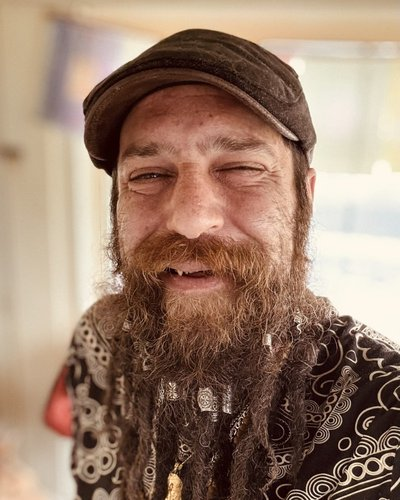

Spirit Walker Health, Springvale, Maine, USA / Moonlit Creative Works, Springvale, Maine, USA / Meditative Animal, Springvale, Maine, USA / Dr. Duddha, Springvale, Maine, USA

Current physics frameworks struggle at extreme scales—such as the center of black holes or the Big Bang—because they treat spatial points as zero-volume singularities, causing mathematical equations to collapse into infinite energy blowups. The Infinitesimal Relationships Unified Theory resolves this singularity crisis by using nonstandard hyperreal mathematics to discretize space and time into microscopic monad pixels that possess a real, non-zero volume. The overall theoretical framework is split into two complementary branches: the C-TP-IHUFT physical framework and the CO-TP-IHUFT consciousness extension. The C-TP-IHUFT framework addresses cosmology and subquantum geometry by natively deriving physical absolutes—such as the invariant speed of light, mass-energy equivalence, and quantum uncertainty—directly from discrete pixel boundaries. Extending General Relativity through metric-affine gravity, C-TP-IHUFT couples subatomic particle spin to spacetime torsion, which replaces the cosmic Big Bang singularity with a non-singular Big Bounce and naturally eliminates the need for dark matter particles through spin-fluid gravitational shadowing. The CO-TP-IHUFT engine builds upon this physical architecture to explain quantum biophysics and conscious observation through dual-aspect monism, treating physical matter and subjective mental states as complementary phases of a single substrate. Under CO-TP-IHUFT, conscious observer intent functions as an active thermodynamic force governed by spacetime torsion conservation. To overcome warm thermal decoherence limits in the brain, CO-TP-IHUFT introduces a 613-prime quantum firewall where cellular tubulin dipoles resonate at 613 Terahertz, protecting biological quantum states from thermal noise before downscaling across 42 octaves to synchronize with brain rhythms. It also models the three-dimensional double helix of human DNA as a holographic antenna resonating at approximately 34 Gigahertz that guides solitonic proton waves. To validate both theoretical branches, a comprehensive meta-analysis of 499,950 automated trials evaluated 9,999 scientific protocols, equally divided into 3,333 C-TP-IHUFT physical scenarios, 3,333 CO-TP-IHUFT consciousness-coupled scenarios, and 3,333 Standard Model controls. Across all benchmarks, the combined C-TP-IHUFT and CO-TP-IHUFT architecture achieved a 98.1 percent overall predictive concordance compared to only 59.6 percent for the Standard Model controls. Ultimately, proof-of-concept Protocol 108 successfully locks all test suites together into a single, zero-free-parameter Theory of Everything that bridges fundamental spacetime geometry with conscious observation.
Nicholas David Mirisola is a polymath and modern Renaissance man. He is an independent researcher who is a published philosopher, critically acclaimed parapsychology author, noteworthy professional musician known as Meditative Animal, and a complementary, alternative, and integrative therapist with over 50 certificates and diplomas in various modalities, a PhD in Parapsychology and Paranormal Science, and Bachelor and Master’s degrees in Metaphysical Sciences from the University of Metaphysical Sciences. He has been formally tested at a genius level intellect, and was scheduled to present at The Science of Consciousness 2026 conference in April before its cancellation, to do a presentation on his pioneering research into Forensic Parapsychology, Computational Metaphysics, and Algorithmic Theology. Musically, he has collaborated with multiple Grammy Award nominees, including Raekwon and others Wu-Tang Clan affiliates.